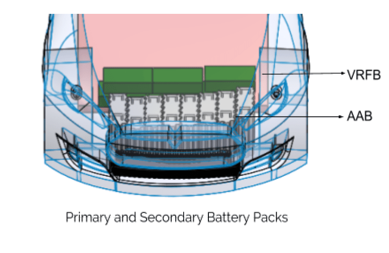
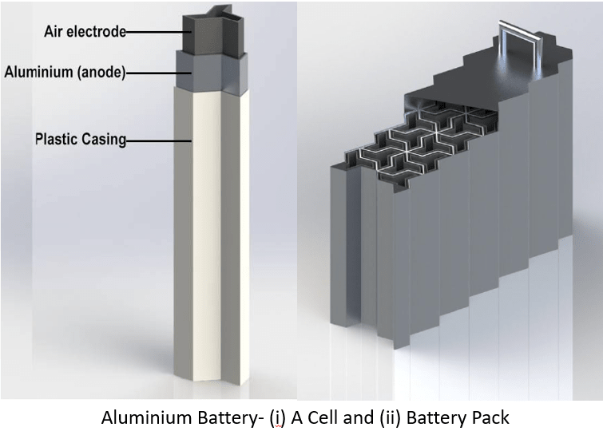
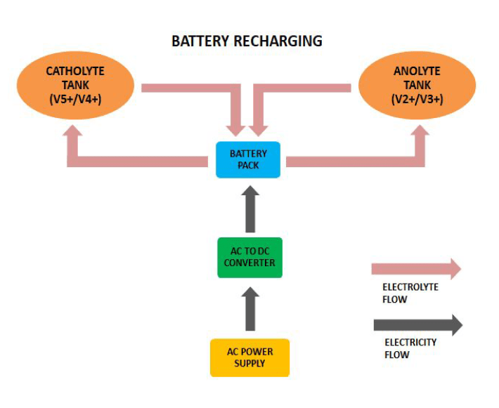

It is no secret that the automotive industry is one of the largest contributors of greenhouse gases and if not checked right now it will perhaps go on to annihilate mankind. To answer this very problem electric vehicles were brought into picture. Although, EVs have undoubtedly come a long way since its initial days, they are still not completely equipped to take on conventional gas-sipping vehicles. A couple of major roadblocks on the way to achieving this are the refuelling systems and the range anxieties which are experienced by drivers. To relegate these problems automakers are resorting to every trick in the book to cater to these challenges. Taraang is a product that tries to reduce the long hours required to recharge the batteries and also provide drivers with long distance solutions. There needs to be a major breakthrough in the power source of these vehicles.
The product is a long-range battery system and refuelling station which aims to recharge the battery in a way different from the conventional plug-in charging. The system consists of dual-batteries which will not only offer a charging time of as low as 5 minutes but also provide long range commuting solution with uninterrupted travel of 500+ kms.
The primary VRFB battery is used for local commute and can be recharged by replacing the discharged electrolytes at a refuelling station and also be charged conventionally in around 3 hours at home thus providing convenience of both gasoline as well as electric vehicle. The discharged electrolyte is recharged at the refuelling station and thereby can be used to refuel other vehicles. The secondary battery is an aluminium air battery which provides very high energy density and thus can be used to travel long distances. This battery system also provides a quick charging solution by electrolytes replacement much akin to gasoline refuelling at pumps. This novel product offers a completely electric “hybrid“ system solution. A reference vehicle, Toyota Prius was used for mechanical design inspiration.
The primary battery is a VRFB battery which consists of 2 electrolyte tanks and a battery pack. The electrolytes from the tank is flown into the battery pack where the reactions take place and energy is generated. Then the discharged electrolyte is flown out from the battery and back to the tank. This process is done repeatedly to provide a continuous power supply The secondary battery is an aluminium air battery which consists of a single electrolyte tank and a battery pack. The electrolyte flows from the electrolyte tank to the battery pack and back. The aluminium anode is consumed during the reaction and the reaction products are carried away with the electrolyte. The design consists of a modular battery pack in which the anode of the battery can be replaced with ease. These two batteries work in pair to provide a very versatile battery system. For the daily commute, the primary battery is used and it provides very quick and efficient charging. For the long-distance commute, the secondary battery can be used.
It consists of a pumping machine which exchanges the vehicle battery electrolytes. It also has a group of small tanks which are connected to a set of cell stacks where charging of Vanadium electrolytes from the tanks takes place one-by-one. A battery management system ensures that the charging time is around 1 hr for the electrolytes taken out from the vehicles. The recycling of aluminium from it’s electrolytes also takes place at refuelling station. (This also acts as a huge energy sink and large amounts of electricity can be stored here when conditions are favourable).